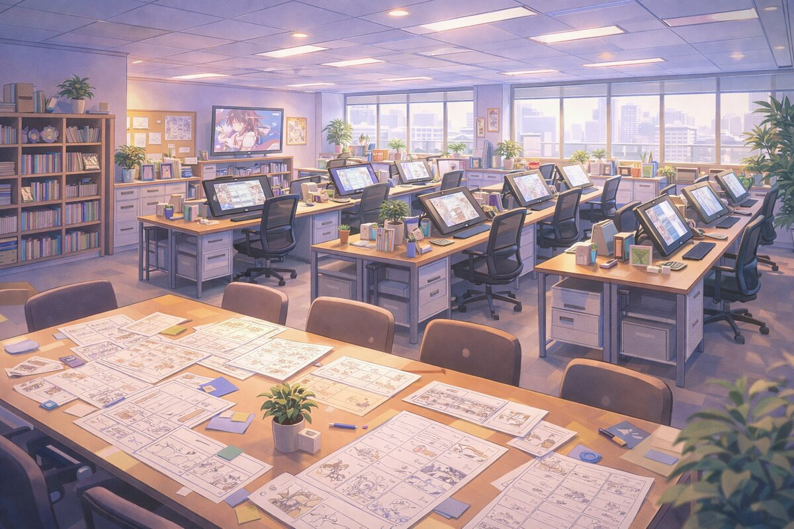

スタジオ紹介
想像力に、命を吹き込む。
Aoki Animationは「すべての物語には、動き出す瞬間がある」という信念のもと、2018年に設立されたアニメーション制作スタジオです。原作の世界観を最大限に引き出し、視聴者の心に残る映像体験を届けること。それが私たちの使命です。作画・演出・撮影・音響、あらゆる工程にこだわり抜き、一つひとつのカットに魂を込めて制作しています。
Company
会社概要
| 社名 | 株式会社 Aoki Animation |
|---|---|
| 設立 | 2018年4月 |
| 代表 | 青木 翔太 |
| 所在地 | 東京都杉並区西荻北3-12-8 AOKIビル 4F |
| 従業員数 | 約120名（2025年4月現在） |
| 事業内容 | アニメーションの企画・制作、キャラクターデザイン、CG制作、映像編集 |
| 主要取引先 | 各放送局・出版社・製作委員会 |
History
沿革
2018
スタジオ設立。OVA「花咲くころに」企画開始。
2019
第1スタジオ稼働。スタッフ30名体制。
2020
初TVシリーズ受注。撮影・仕上げ内製化完了。
2022
第2スタジオ開設。3DCGセクション新設。80名体制。
2023
OVA「花咲くころに」公開。国内アワードノミネート。
2024
TV「星屑カルテット」「メカニクス・コード」放映。
2025
TV「蒼穹のリリィ」放映開始。劇場版「永遠のセレナーデ」公開。120名体制。
Environment
スタジオ環境
広々とした作画フロア、最新のデジタル作画環境、充実した資料ライブラリ。クリエイターが最高のパフォーマンスを発揮できる環境づくりに力を入れています。
全席にWacom Cintiq Pro を導入し、CLIP STUDIO PAINTやTVPaint Animationなど、プロ仕様のソフトウェアを完備。快適な制作環境のなかで、クリエイターたちが日々作品づくりに取り組んでいます。
